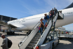

Credits to Flickr
When the plane lands, you may feel tempted to immediatly stand up, grab your bags, and get off of the plane. That is not possible. The crew will need some time to get to the gate and set up the boarding ramp. You will also need to wait for the people in the seats closer to the front of the plane to get off first.
Once the people in the seats in front of you have moved, get up, retrieve your bags, and follow the people in front of you. Remember not to stop, and to wait until you are inside the airport and out of the way of people trying to get off of the plane to reach in your bag and find something.
If you have a checked bag, you will need to go to baggage claim to retrieve it. Look at the airport map and the signs to locate the baggage claim. Once you are there, look at the screens and your boarding pass for the bag carousel that matches your flight.
Once you have located your bag carousel, and it has started to bring out the bags, stand close enough to the carousel to where you can see the bags. Keep searching for a bag that looks like yours, and if you find a bag that you think might be yours, grab it off the carousel. Check the tag to see if it matches yours. If it doesn't, put it back on the carousel. Also, no matter how fun it looks, don't try to ride on the carousel. You will get in huge trouble with the airport staff.
If you rented a car to use for the duration of your time traveling, go to the rental car area, and wait in line. Once you are at the front of the line, talk to the agent, who will give you the keys to the vehicle, as well as tell you where the car is in the parking lot.
If you have gone on an overnight flight and didn't get any sleep, now is the perfect time to get some caffeine in your system. The airport will likely have coffee, tea, or energy drinks, so get some while you can. Try not to nap, as it won't help you adjust to the different time zone.
Check to see what time you can get into your place to stay. Be sure to plan what to do between that time, and know where you want to be.